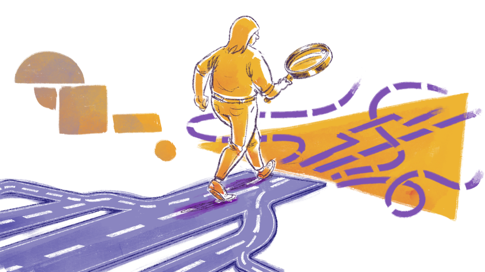

tcc i
Elaboração do Plano de Formação
Neste Curso de Especialização, há que se observar, questionar e investigar o espaço da Educação Profissional e Tecnológica na articulação do conhecimento. Assim sendo, a proposta para o Trabalho de Conclusão de Curso – TCC I será denominada Plano de Formação.
Segundo o projeto deste curso,
por meio do Plano de Formação, propõe-se que os/as estudantes articulem, de forma congruente, as diferentes unidades temáticas cursadas em torno de uma situação real e que exercitem a atitude de estudar as relações existentes entre os vários aspectos que condicionam o problema levantado, cultivando, assim, o exercício da interpretação dialética da realidade.
Então, nesse primeiro momento, o Plano de Formação irá registrar onde se quer chegar e a direção que se quer tomar, bem como dimensionará a postura investigativa que supera a ação cotidiana de interação com os fenômenos que ocorrem em nossas vidas.

Título: Refletir sobre os caminhos já percorridos para pensar nos caminhos a serem trilhados
Fonte: Prosa (2024b).
A escolha do poema Cantares, do autor Antônio Machado, não foi aleatória: ele serve para lembrar-nos de que a construção deste Relatório de Formação é um caminho e de que o caminho de cada pessoa é único.
Em um primeiro momento, cabe a formulação de um Plano de Formação a partir das inquietações cotidianas e da orientação do docente escolhido para esse caminhar.